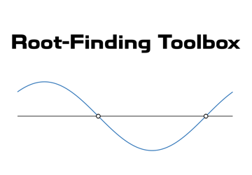

Root-Finding Toolbox Documentation

Copyright © 2022 Tamas Kis
Contents
Technical Documentation
Click here.
Installation
- Download the toolbox from File Exchange or GitHub.
- Open the INSTALL folder.
- Double-click on Root-Finding Toolbox.mltbx.
MATLAB will automatically perform the installation and add all the contents of the toolbox folder to the MATLAB search path.
Opening this documentation using the MATLAB Command Window.
To open the home page (this page) of the toolbox documentation in MATLAB, type the following in the Command Window:
doc_RFT
To open the documentation of a specific function with name function_name, type the following in the Command Window:
doc_RFT function_name
To open the technical documentation PDF (Root_Finding_Methods.pdf), type the following in the Command Window:
doc_RFT tech
Fixed-Point Iteration
- fixed_point Fixed-point iteration for finding the fixed point of a univariate, scalar-valued function.
- fixed_point_n Fixed-point iteration for finding the fixed point of a multivariate, vector-valued function.
Root-Finding Methods for Univariate, Scalar-Valued Functions
- root_bisection Bisection method for finding the root of a univariate, scalar-valued function.
- root_brent_dekker Brent-Dekker method for finding the root of a univariate, scalar-valued function.
- root_iteration Function iteration method for finding the root of a univariate, scalar-valued function.
- root_itp Interpolate, Truncate, and Project (ITP) method for finding the root of a univariate, scalar-valued function.
- root_newton Newton's method for finding the root of a differentiable, univariate, scalar-valued function.
- root_secant Secant method for finding the root of a univariate, scalar-valued function.
Root-Finding Methods for Multivariate, Vector-Valued Functions
- rootn_iteration Function iteration method for finding the root of a multivariate, vector-valued function.
- rootn_newton Newton's method for finding the root of a differentiable, multivariate, vector-valued function.
- rootn_broyden Broyden's method for finding the root of a multivariate, vector-valued function.